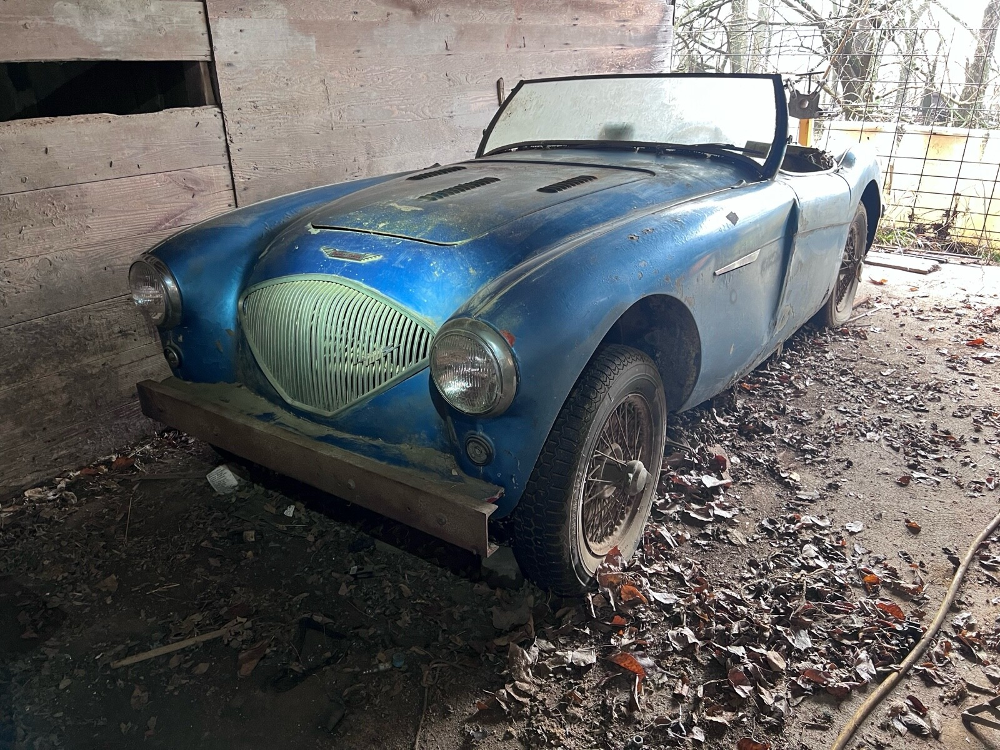
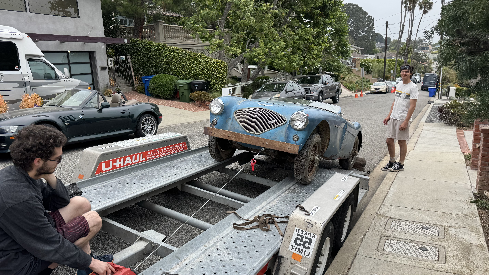
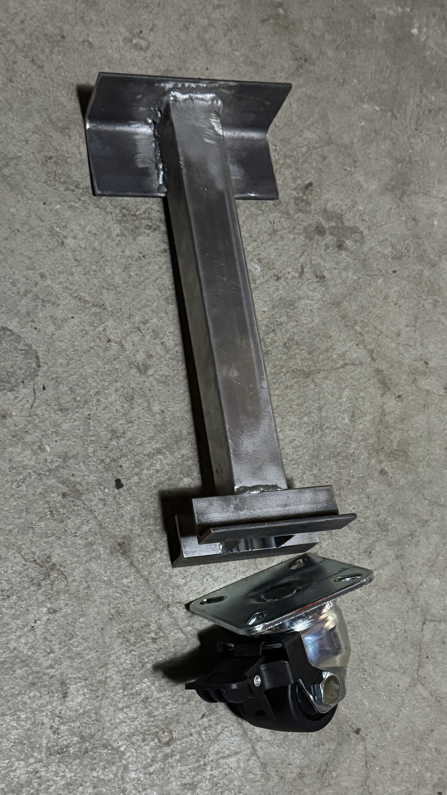
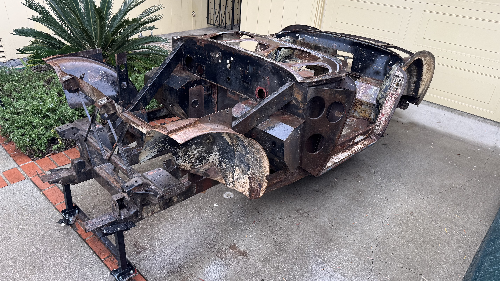
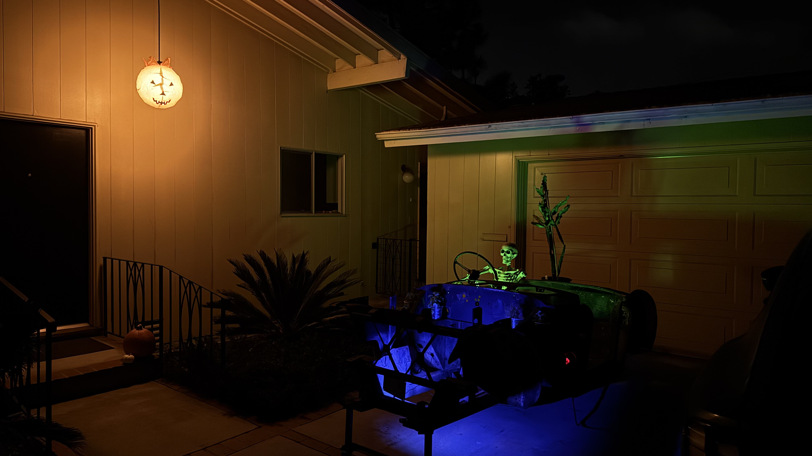

1956 Austin-Healey 100 BN2
My dad had an Austin-Healey when he was in the Army stationed in Germany. He crashed it long before I was born, so I grew up only hearing about his fondness for the car. After graduating from high school I might have had a chance to buy one but made the mistake of choosing an MGB instead. After that Healey prices put them out of reach.
After many years of reading about the cars (and selling the MGB and finishing reassembly of the Midget) I decided the BN2 model was the one I wanted. It is very close to the original iteration of the car but with a few meaningful improvements. The later cars gained a larger engine (but not necessarily more power) and more creature comforts, but for that I have the Z3.
Finally, in the summer of 2025, this project was listed on eBay. It had been sitting in a barn in Kansas for decades with its engine and transmission removed while the owner dreamed about restoring it and collected extra parts.

My son and I flew into Kansas City, rented a U-Haul and drove about two hours south to retrieve it. A non-stop run got us back to California in just over 24 hours!

We unloaded the next day and I spent the next few months organizing the extra parts, learning about this car's particulars, and taking everything single piece off of the frame. I designed and built stilts that bolt to the frame so it could still be moved even after the suspension and wheels were removed.


Waiting for the go-ahead to bring it down for sandblasting and rust repair, we put it to use for Halloween:
